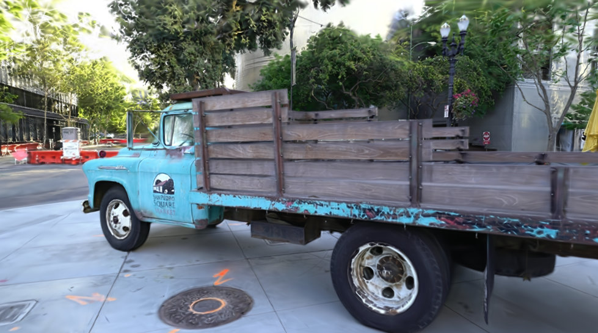
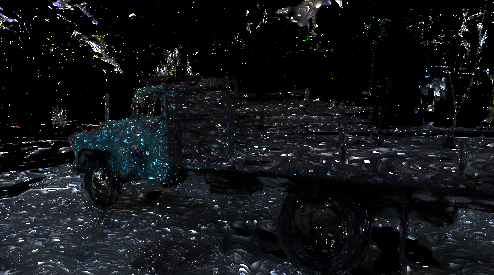
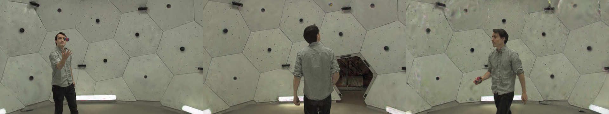

Fast Splat Viewing¶
FastGaussianRenderer is a forward-only rendering path for 3D Gaussian
Splatting that trades autodiff support for speed: 1.5–2× faster than the
training rasterizer on typical scenes and up to 3.7× when large splats
cover many pixels — while matching it pixel-for-pixel (45+ dB PSNR on real
scenes).
It adapts the ideas of
fast-gaussian-rasterization
(a CUDA/OpenGL geometry-shader pipeline) to Metal compute kernels and MLX's
lazy graphs. Use it anywhere you only need images: the interactive viewer,
flythrough export, evaluation sweeps, and dynamic (4D) sequence playback.
Training still uses the differentiable
render_gaussians.
Tanks & Temples truck (428k Gaussians) rendered by the fast path —
45.5 dB PSNR against the training rasterizer, at 2× the frame rate.
Usage¶
from mlx3d.splatting import FastGaussianRenderer, GaussianModel
model = GaussianModel.load_ply("point_cloud.ply")
renderer = FastGaussianRenderer(model) # caches activations, covariances, SH
out = renderer.render(camera) # {"image", "alpha"}
Everything is also reachable from the CLI:
mlx3d-view point_cloud.ply --fast # interactive viewer, fast RGB frames
mlx3d-render point_cloud.ply --fast --out render.png
python examples/benchmark_fast_rasterization.py --ply point_cloud.ply
One-shot functional form (mirrors render_gaussians, no cross-frame caching):
from mlx3d.splatting import render_gaussians_fast
out = render_gaussians_fast(camera, means, quats, scales_act, opacities_act, sh=sh)
Useful knobs on the class:
sh_degree=0..3— cap the evaluated spherical-harmonic degree (0 is fastest, view-independent color).t_min— early-termination transmittance. The default1/255stops compositing as soon as no further splat could change an 8-bit pixel (training uses1e-4).color_refresh— fraction of the scene radius the camera must move before view-dependent SH colors are re-evaluated (0= every frame).antialias=True— Mip-Splatting opacity compensation, as in training.
Why it is faster¶
The training rasterizer must stay differentiable and rebuild everything every frame. The fast path exploits the fact that a viewer renders the same scene many times:
- One fused "geometry" kernel. Camera transform, EWA projection, conics, culling, and tile bounds run in a single Metal pass per Gaussian — replacing ~60 elementwise MLX ops (~3.3 ms → 0.4 ms for 200k Gaussians).
- Cross-frame caching. Activations (
exp/sigmoid), 3D covariances, and SH-evaluated colors are computed once; colors refresh only when the camera moves enough to matter. - Cheaper sorting. Gaussians are depth-sorted once globally (N keys),
so tile duplicates are emitted already depth-ordered and only a stable
32-bit tile-key sort remains — the training path sorts 64-bit
(tile, depth)keys over every duplicate. - No mid-frame CPU/GPU sync. Duplicate buffers persist across frames and grow on demand, so a whole frame is submitted as one lazy graph. The training path must stall mid-frame to size its buffers.
- Forward-only compositing. No backward bookkeeping, fp16 splat colors (conics stay fp32 — near-camera footprints underflow half precision), and an 8-bit-aware early-out.
Benchmarks¶
Apple M1 Pro (16 GB), macOS, MLX 0.31. Orbiting camera; mean frame latency.
Real scene — Tanks & Temples truck (428k Gaussians, SH 3)¶
| viewpoint set | resolution | reference | fast | speedup | PSNR |
|---|---|---|---|---|---|
| dataset cameras | 979×546 | 63.9 ms (15.6 fps) | 30.8 ms (32.4 fps) | 2.07× | 45–49 dB |
| dataset cameras | 1958×1092 | 193.8 ms (5.2 fps) | 96.4 ms (10.4 fps) | 2.01× | 45–49 dB |


Left: training rasterizer. Right: |difference| of the two paths amplified 50× — the residual is fp16 color quantization noise.
Synthetic scenes¶
| scene | resolution | reference | fast | speedup |
|---|---|---|---|---|
| 50k Gaussians | 1280×720 | 10.3 ms (97 fps) | 7.0 ms (143 fps) | 1.48× |
| 200k Gaussians | 1280×720 | 34.6 ms (29 fps) | 20.6 ms (49 fps) | 1.68× |
| 500k Gaussians | 1280×720 | 75.8 ms (13 fps) | 37.2 ms (27 fps) | 2.04× |
| 500k Gaussians | 1920×1080 | 131.5 ms (7.6 fps) | 62.2 ms (16 fps) | 2.11× |
| 20k large splats | 1920×1080 | 237.7 ms (4.2 fps) | 63.9 ms (16 fps) | 3.72× |
The advantage grows with the pixel-to-point ratio (large splats, high resolution) — the same regime the original CUDA implementation highlights.
Dynamic (4D) sequences¶
Because covariances, colors, and buffers are owned by the renderer,
update() makes per-timestep playback cheap. The
Dynamic 3D Gaussians juggle
sequence (336k Gaussians × 150 timesteps, per-timestep positions, rotations,
and colors):
renderer = FastGaussianRenderer(**sequence.timestep(0))
for t in range(sequence.num_timesteps):
renderer.update(**sequence.timestep(t)) # new means/quats/colors
frame = renderer.render(camera)["image"]
| playback (640×360, orbiting) | ms / frame | fps |
|---|---|---|
reference render_gaussians |
25.1 | 39.8 |
| fast (update + render) | 14.9 | 67.3 |
The full juggle sequence — every timestep's positions, rotations, and
colors streamed through update() and rendered entirely by the
fast path (67 fps at 640×360, ~14 fps at the 960×540 shown here, on an
M1 Pro).

Timesteps 0 / 60 / 120 of the orbit.
See examples/play_dynamic_gaussians.py
for the full loader (including how to fetch one scene of the release without
downloading the whole 11.5 GB archive).
Limitations¶
- Forward-only. No gradients flow through
FastGaussianRenderer; userender_gaussiansfor training and losses. - EWA pinhole projection only (no
projection="ut"distortion-aware mode). - Splat colors are quantized to fp16 (worst-case ~0.1% per channel); if you need bit-exact output for evaluation metrics, render with the training path.
- Stale-color rendering (
color_refresh > 0) is an approximation while the camera moves; setcolor_refresh=0for exact view-dependent color every frame.